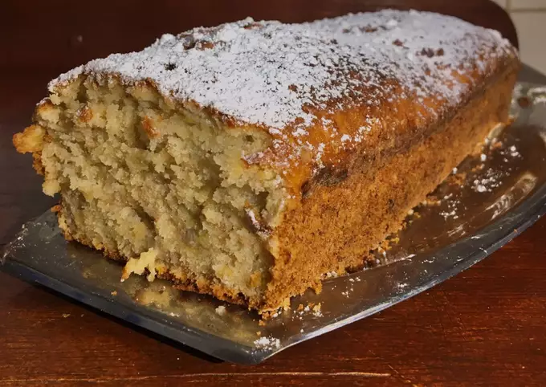

- Ingredientes:
- 12 raciones
- 2 bananas grandes
- 2 huevos
- 2 tazas harina 0000
- 1 taza avena
- 3/4 taza azúcar
- 1/2 taza aceite
- Chorro leche
- 1 cda polvo de hornear
- 1/2 cdita sal
- Chorro esencia de vainilla
- Mezclar los huevos con el azúcar, el aceite y la esencia de vainilla.
- Agregar el resto de los ingredientes (harina, avena, polvo de hornear, sal, leche). Si no tienen avena, en vez de 2 tazas de harina le ponen 2 y 1/2.
- Pisar la banana (no mucho, dejar algunos pedazos grandes para que quede más sabrosa) y agregarla al bowl con la mezcla, revolviendo bien.
- ✅ Con nueces previamente cortadas en pedacitos queda mucho más rico, yo no conseguí por eso no le agregué. Para esto, primero tienen que pasarlas por harina e incorporarlas a la mezcla en movimientos envolventes para que al cocinarlas no se concentren todas en el piso de la budinera.
- ✅ También se le puede poner un corazón de dulce de leche. Para eso, vertemos la mitad de la mezcla en la budinera y sobre ésta, a lo largo y en el medio, el dulce de leche (se puede derretir un poco en el microondas para que sea más fácil), y después cubrir con la otra mitad de la mezcla.
- Pasar la mezcla del bowl a una budinera previamente enmantecada y enharinada. Meter al horno a 180 grados durante 50-60 minutos aprox., dependiendo de la potencia de cada horno.